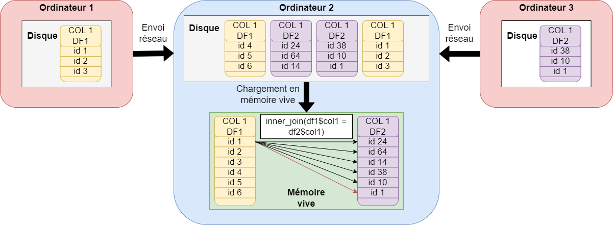

library(sparklyr)Programmer sur un cluster spark
Sparklyr
L’environnement de travail pour les données MiDAS à la Dares est un cluster spark yarn.
Les quatre manières de programmer en spark sont les suivantes
sparklyr : utilisation de spark avec R en syntaxe dplyr ;
sparkR : utilisation de spark avec R dans une syntaxe plus proche du SQL ;
pyspark : utilisation de spark avec python ;
requêtes SQL : via R ou python.
Le langage retenu dans ce tutoriel est sparklyr. Une formation de programmation sur un cluster spark avec sparklyr est disponible ici.
Cluster spark et double distribution
Le cluster spark est un ensemble d’ordinateurs connectés entre eux en réseau et dont les tâches sont centralisées et organisées par un cluster manager yarn :

Le cluster spark fonctionne sur un principe de double distribution :
les données Midas sont distribuées sur les ordinateurs du cluster : chaque ordinateur ne connaît qu’une partie des données Midas. Les ordinateurs peuvent s’échanger des données entre eux via le réseau : cette opération est un shuffle.
les tâches à effectuer sont distribuées sur les ordinateurs : chaque ordinateur effectue son calcul en parallèle des autres.
Ce mode de fonctionnement a une implication importante sur la manière de programmer : les opérations vectorielles (qui s’appliquent à une colonne intégrale) sont beaucoup plus rapides que les opérations qui s’appliquent à des groupes de lignes.
NoteOpération vectorielle
Une opération vectorielle est une opération qui s’applique simultanément à une colonne entière de données, plutôt qu’à chaque ligne une par une. En spark, comme en R, la multiplication par 2 d’une colonne est vectorielle.
Ce type d’opération ne nécessite aucun shuffle : chaque ordinateur multiplie par 2 le morceau de colonne dont il dispose, en une seule fois, et en parallèle des autres ordinateurs. C’est très rapide, même sur des milliards de lignes.

NoteOpération ligne par ligne
Certaines opérations nécessitent forcément de lire les données ligne à ligne. C’est le cas des jointures, qui nécessitent de comparer deux colonnes d’identifiant de jointure entre elles. Comme les données sont distribuées, les ordinateurs du cluster doivent s’échanger des données (shuffle) pour comparer les colonnes de jointure sur un même ordinateur.
Les opérations par groupe de ligne (group_by(id)) nécessitent aussi un échange de données entre ordinateurs pour regrouper les lignes avec la même valeur de id sur le même ordinateur.
Les opérations qui nécessitent des shuffles sont beaucoup plus lentes : l’échange de données volumineuses via le réseau impose un coût en temps incompressible.

Spark dispose d’algorithmes pour optimiser les jointures, qui ne sont pas détaillés ici :
broadcast join ;
sort-merge join ou shuffle hash join.
Bonnes pratiques de programmation sur un cluster
Pour tirer pleinement parti du calcul distribué, il est nécessaire de limiter au maximum les shuffles, en programmant de la manière la plus vectorielle possible. Il est recommandé d’éviter les boucles for. Une boucle for porte sur un ensemble de lignes. Par exemple, une boucle for qui repète une opération mois par mois pour 12 mois impliquera a minima 12 shuffles sur un cluster spark.
Dans cette fiche, deux manières alternatives de programmer sont présentées pour mesurer le retour à l’emploi. Elle vise à illustrer dans quel cas une boucle for est utile, et comment l’éviter lorsqu’on programme sur un cluster spark.
Programmation en cas de ressources informatiques limitées
Arrow
1. Avantages d’arrow
- Mémoire :
arrowlit les données directement sur disque (souvent au format Parquet/Feather) et ne charge que ce qui est nécessaire (colonnes et lignes utiles). On évite de saturer la RAM avec de gros volumes de données. - Vitesse : grâce au format colonne et à des optimisations, les filtres et agrégations sont beaucoup plus rapides qu’avec un CSV chargé en entier.
2. open_dataset() vs. data.frame classique
open_dataset()- Ouvre un dossier de fichiers comme une table logique unique.
- Ne charge rien immédiatement : il “pointe” simplement vers les données et lit des métadonnées (nom de colonnes).
- Les verbes
dplyrsont lus en lazy evaluation (voir plus bas).
- data.frame ou tibble
- Charge toute la table en mémoire.
- Chaque opération duplique potentiellement des données et consomme la RAM.
- Impossible de travailler si la table dépasse la mémoire disponible.
3. Le principe de la lazy evaluation
- Avec
arrow+dplyr, les instructions sont enregistrées comme un plan de calcul, mais rien n’est exécuté tout de suite. - L’exécution n’a lieu que lorsqu’un résultat final est demandé (affichage
print(), exportwrite_parquet(), agrégatsummarise() %>% collect(). - Avantage :
arrowpeut optimiser la requête (ne lire que les colonnes/partitions utiles, paralléliser, etc.).
4. Utiliser collect() avec parcimonie ?
collect()ramène le résultat en R sous forme detibbleoudata.frame, donc en mémoire.- Utilisé trop tôt ou trop souvent, on perd les avantages d’
arrowet on risque de saturer la RAM. - Bonne pratique : enchaîner les transformations (
filter,select,mutate,summarise) sur le dataset au format d’arrow, puis appelercollect()uniquement à la fin, sur un résultat réduit (quelques colonnes, agrégats ou milliers de lignes). - Pour écrire un résultat volumineux, préférer
write_dataset()qui reste côtéarrow.
library(arrow)